Ba vật liệu, mỗi loại ba bố trí chi tiết thật; thêm hai mẫu mòn/vá đặt thưa. Tất cả đã lưu vào TMJ, không đổi ngẫu nhiên lúc game chạy.
Đây là bộ mẫu để nhận hướng vật liệu. Tile chuyển tiếp vẫn giữ artwork phẳng và geometry cũ; chưa nhận full bank/map. So texture ở kích thước thật trước khi xem ảnh nguồn lớn. Paving có nhịp lát rõ hơn; kiểm xem có lấn actor hoặc lộ ô lặp không.
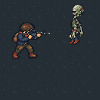
Palette: #252E34 #202930 #29333A #303B42
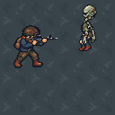
Palette: #39434A #343E45 #444E55 #4C565D
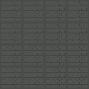
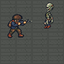
Palette: #494C48 #40443F #50534F #3B3F3B
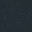
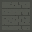
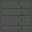
Hai mẫu mòn/vá chỉ đặt hai ô trong mỗi patch có hỗ trợ. Concrete ưu tiên variant yên. Không dùng biến thể đậm để phủ cả map.
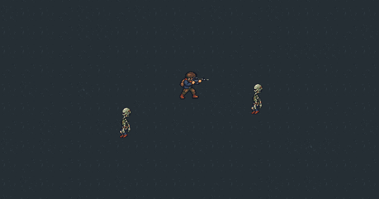
environment.material_sample.asphaltVariant nền nhẹ
environment.material_sample.concreteVariant nền nhẹ
environment.material_sample.pavingVariant nền nhẹ
environment.material_sample.asphalt_v02Variant nền nhẹ
environment.material_sample.asphalt_v03Variant nền nhẹ
environment.material_sample.concrete_v02Variant nền nhẹ
environment.material_sample.concrete_v03Variant nền nhẹ
environment.material_sample.paving_v02Variant nền nhẹ
environment.material_sample.paving_v03Variant nền nhẹ
environment.material_sample.asphalt_patchMòn/vá đặt thưa
environment.material_sample.concrete_wearMòn/vá đặt thưa
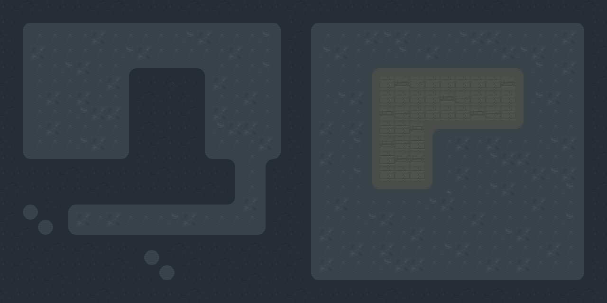
Geometry/cạnh và buffer concrete giữ nguyên. Dải chuyển tiếp chưa texture hóa trong lượt mẫu; cần nhận hướng vật liệu trước.
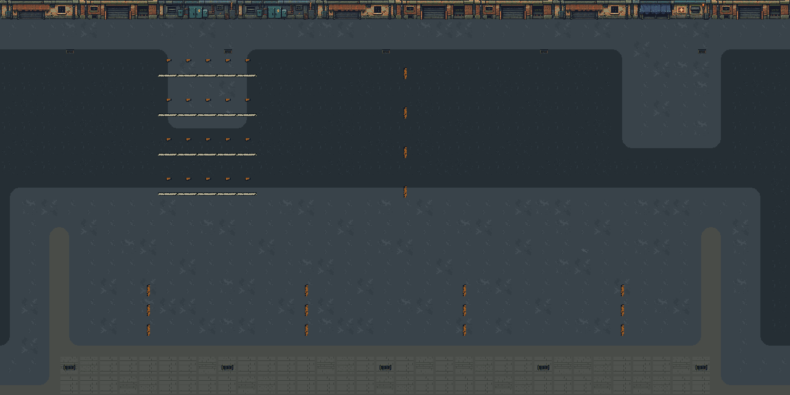
Pan này là study trên raster Tiled, không phải video gameplay. Mở play_a.cmd/play_b.cmd để kiểm di chuyển/camera thật; human scrolling/readability còn chờ nhận.
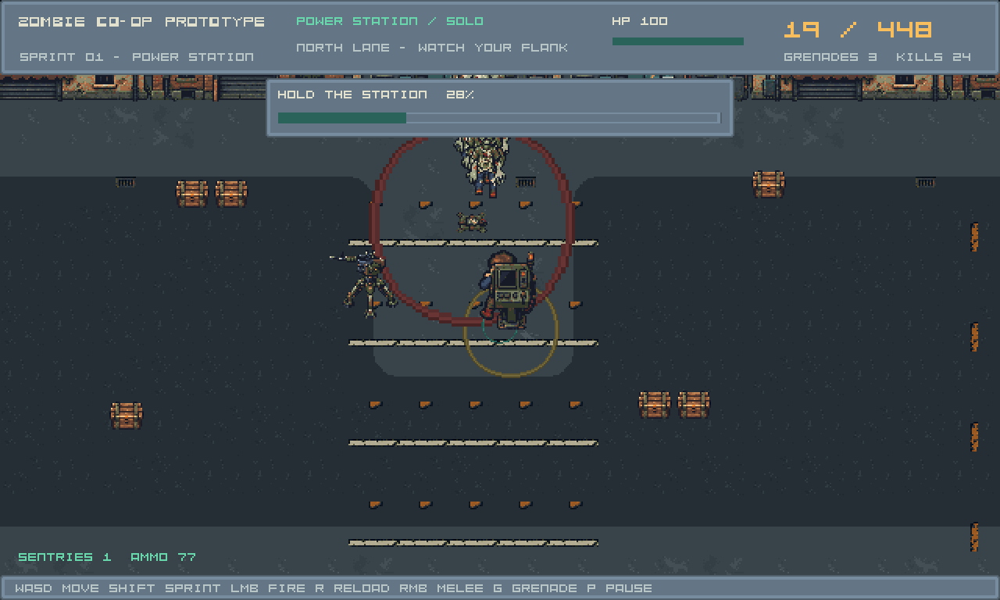
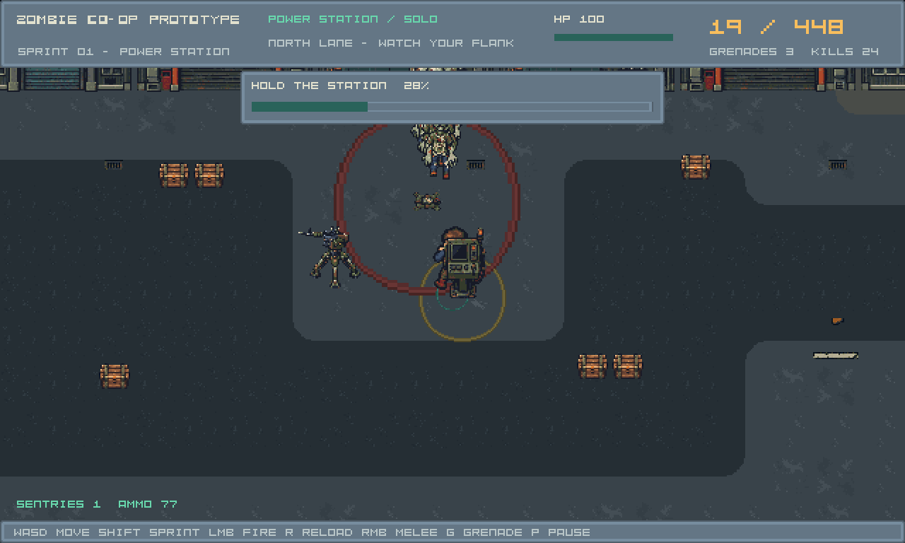